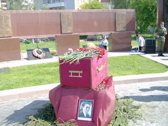
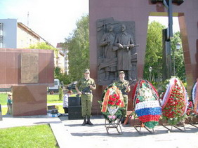

| 22 июня, в День памяти и скорби, на реконструированном ко дню 65 - летия Победы воинском мемориале, что на Вагжановском переулке в г. Твери, который по-старинке продолжают называть Смоленским кладбищем, прошло перезахоронение останков 39 воинов Красной Армии, погибших при обороне г. Калинина в районе Исаевского ручья, Дорошихи и Путиловского полигона осенью 1941 года.
 Поисковиками были найдены и прочитаны два медальона погибших, принадлежавшие красноармейцу Шкуропий Фёдору Константиновичу, 1914 года рождения, уроженцу Краснодарского края и красноармейцу Тупикову Владимиру Игнатовичу из Донецкой области. Останки Тупикова В.И. были переданы родственникам погибшего. Их перевезут и перезахоронят на родине красноармейца. Поисковиками были найдены и прочитаны два медальона погибших, принадлежавшие красноармейцу Шкуропий Фёдору Константиновичу, 1914 года рождения, уроженцу Краснодарского края и красноармейцу Тупикову Владимиру Игнатовичу из Донецкой области. Останки Тупикова В.И. были переданы родственникам погибшего. Их перевезут и перезахоронят на родине красноармейца.
В траурном митинге, посвященном Дню памяти и скорби и процедуре перезахоронения останков воинов Красной Армии приняли участие: депутат Государственной Думы Федерального собрания РФ В.А. Васильев, председатель Законодательного собрания Тверской области А.Н. Епишин, Глава города Твери В.И. Бабичев.
На еще одну новую могилу павших защитников Калинина был возложен венок и от нашего Фонда «Жить и Помнить».
|